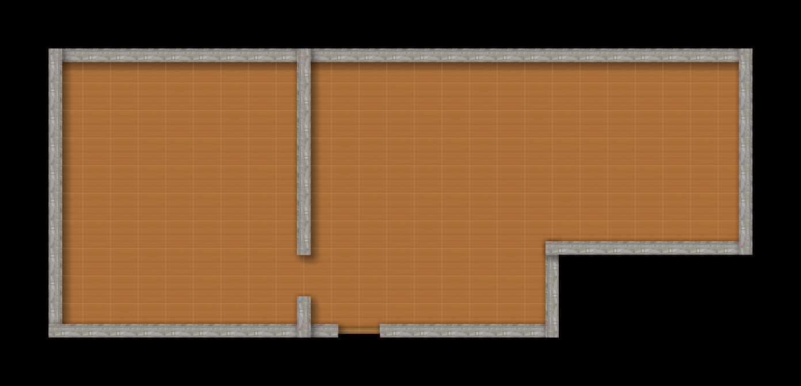
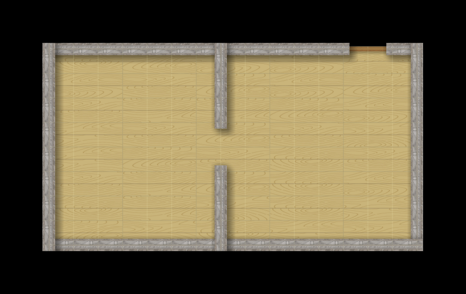
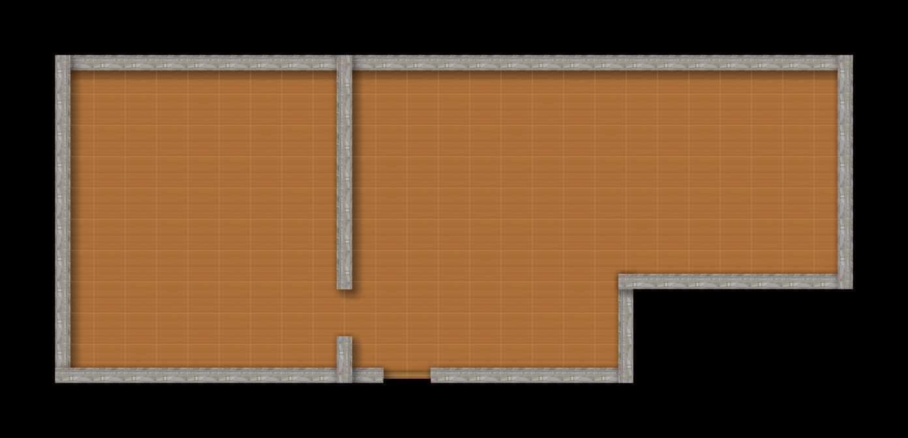
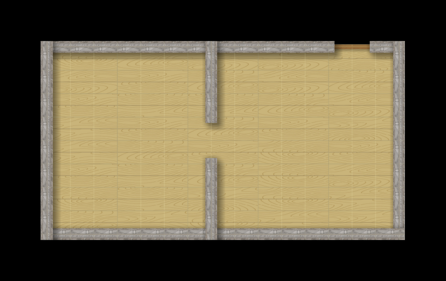

Autentificate cu Facebook pentru a putea juca
How to move
To move use keys WASD and press P to pause
How to play
See how long can you survive in the lab. However if you are going to lose all the points.
About Pac-Man
Pac-Man, stylized as PAC-MAN, is an arcade game developed by Namco and first released in Japan as Puck Man in May 1980. It was created by Japanese video game designer Toru Iwatani. It was licensed for distribution in the United States by Midway Games and released in October 1980. Immensely popular from its original release to the present day, Pac-Man is considered one of the classics of the medium, and an icon of 1980s popular culture. Upon its release, the game—and, subsequently, Pac-Man derivatives—became a social phenomenon that yielded high sales of merchandise and inspired a legacy in other media, such as the Pac-Man animated television series and the top-ten Buckner and Garcia hit single "Pac-Man Fever". The game was popular in the 1980s and 1990s and is still played in the 2010s.
Our Game (PAMAF)
PAMAF is basicly a pacman game which takes places on the hallways of the faculty of computer scinece Alexandru Ioan Cuza from Iasi.
 


